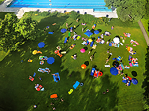
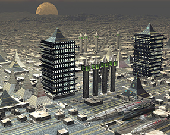

Übung SoSe 2021
3D/ VR Systeme
Valentina Hiseni & Zoe Schubert
SoSe2021 | Universität zu Köln, Institut für Digital Humanities
Konstituierende Sitzung
Formalia

Roadmap &
Einführung
Projektarbeit

Kurzvorstellung
Valentina Hiseni & Zoe Schubert
vhiseni1@uni-koeln.de | zoe.schubert@uni-koeln.de
SoSe2021 | Univeristät zu Köln, Institut für Digital Humanities
Allgemein
- Name d. Veranstaltung: 3D/ VR Systeme
- Art d. Veranstaltung: Praktische Übung
- Zuordnung: Bachelor Basismodul
- Ort: Virtuelle Veranstaltung
- Erfolgreicher Abschluss durch "aktive Teilnahme"
- Kurs wird nicht benotet
Termine
SoSe 2021
- 3 Gruppen
- 14 wöchentliche Termine
- Gruppe 1 - Mi: 14:00 - 15:30 Uhr
- Gruppe 2 - Mi: 16:00 - 17:30 Uhr
- Gruppe 2 - Fr: 14:00 - 15:30 Uhr
Teilnahme
- Voraussetzungen
- Anwesenheit
und
- Klipsplatz oder Fixplatz
- Erfolgreicher Abschluss durch "aktive Teilnahme":
- Teilnahme (teilweise obligatorisch)
und
- Projektarbeit (Details folgen)
Seminarplan
- Sitzung 1 -- Konstituierende Sitzung
- Sitzung 2 -- Einführung: 3D Modellierung
- wir sukzessive ergänzt
Themen
- Praktisches Arbeiten im Kontext 3D/ VR:
Modellieren mit
Blender: die Software
Konzept
- Modellierung
- Texturierung
- Beleuchtung
- Animation
- Kamerafahrt
=> Konzept gilt auch für andere 3D-Modellierungstools
Themen im Kurs zur Modellierung
- Das Benutzerinterface von Blender: Getting Around
- Einführung
- Parametrische Grundkörper
- Splines u. Shapes
- Modellierungstechniken mit Splines/ Rotationskörpern/ Extrusionskörpern
- Polygon-Objekte
- Objekttypen/ Subobjekte
- Das Modifier-Konzept
- Materialien
Fortsetzung
- Texturgrundlagen
- Multimaterialien
- UVW-Mapping
- Fortgeschrittene Modellierungstechnologien
- Beleuchtungsgrundlagen, Beleuchtungsszenarien, Sonnenlichtsysteme
- Kamerasysteme
- Animationen
Beispiel: Semesterarbeiten vergangener Semester
Ablauf der Sitzungen
- Theorie
- Praktische Beispiele:
Erklärung/ Anleitung durch Vorführung &
anschließendes Ausprobieren
- Eigenständig arbeiten und Aufgaben lösen
- Projektarbeit ≙ Ergebnis der Einzelaugaben
und
- Film d. 3D Arbeit mit Kamerafahrt und Animation
Vorgaben
- Thema: Außenräume/ Städte
- Die Modelle können dabei sowohl fiktive als auch real vorkommende Gebäude, Parks oder ähnliches
enthalten. Auch die Gestaltung von Fantasiestädten ist möglich.
Vorgaben
- Jede Arbeit soll sowohl:
- einen Park-Teil (mit kleinem Spielplatz, Rutsche, Bank etc.) als auch
- einen reinen Gebäudeteil enthalten (inkl. Straßen etc.).
Vorgaben
- Weiterhin sollen unterschiedliche Modellingtechniken eingesetzt werden:
- Rotations-,
- Extrusionskörper,
- Kombination parametrischer Grundkörper,
- Arbeit an Polygonnetzstrukturen).
Weitere Ideen
- Unterwasserwelt, Weltraum, Wüste
- Historische Städte (Mittelalter, Wikinger, Steinzeit...)
- Bekannte Städte und Sehenswürdigkeiten
- Bekannte fiktive Orte (Simpsons, Micky Maus...)
Aufgabe für den ersten Termin:
- Überlegen Sie sich ein Thema für Ihre Projektarbeit
- Installieren Sie sich ggf. die Software
(Studentenlizenz von Autodesk)